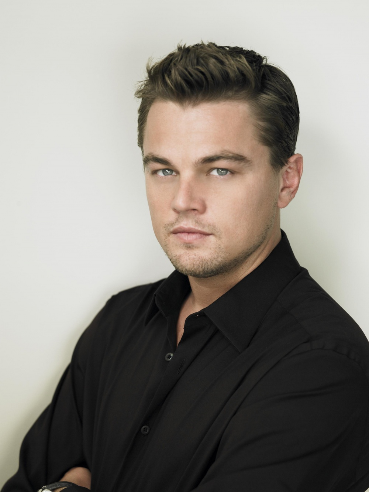
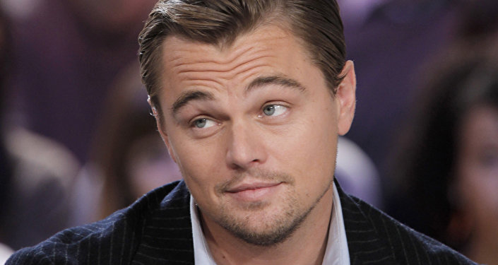
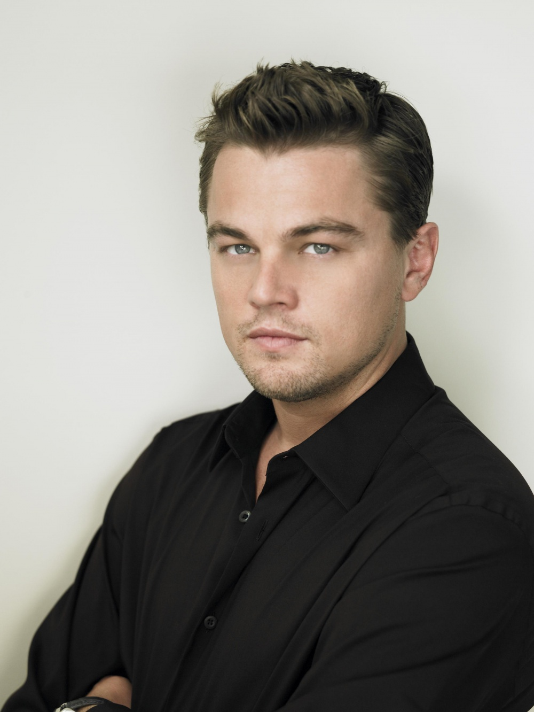
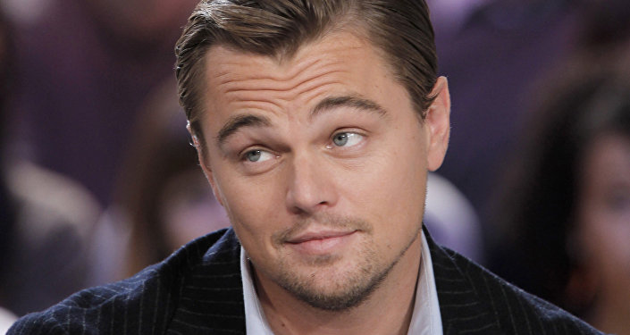

Досье
 



Леона́рдо Вильгельм Ди Ка́прио (англ. Leonardo Wilhelm DiCaprio; род. 11 ноября 1974, Лос-Анджелес) — американский актёр и продюсер[2]. Четыре раза был номинирован на премию «Оскар» за лучшую мужскую роль в фильмах «Авиатор» (2004), «Кровавый алмаз» (2006), «Волк с Уолл-стрит» (2013) и «Выживший» (2016), а также за лучшую мужскую роль второго плана в фильме «Что гложет Гилберта Грэйпа» (1994). Четыре раза был номинирован на премию «BAFTA» и одиннадцать раз на премию «Золотой глобус». В 2016 году стал обладателем премии «Оскар» в номинации «Лучшая мужская роль», а также награды за лучшую мужскую роль британской премии BAFTA за исполнение роли Хью Гласса в фильме «Выживший». Лауреат трёх премий «Золотой глобус» за лучшую мужскую роль в драме за роль Говарда Хьюза в фильме «Авиатор» (2004), обладатель премии в номинации «Лучшая мужская роль в комедии или мюзикле» за роль Джордана Белфорта в фильме «Волк с Уолл-стрит» (2013) и в номинации «Лучшая мужская роль в драме» за роль в фильме «Выживший» (2016). Номинант премий «Сатурн», «Премии Гильдии киноактёров США» и «Спутник». Актёрскую карьеру начал в первой половине 1990-х годов. В 2000-х годах получил признание публики и критиков за работу в широком диапазоне киножанров.